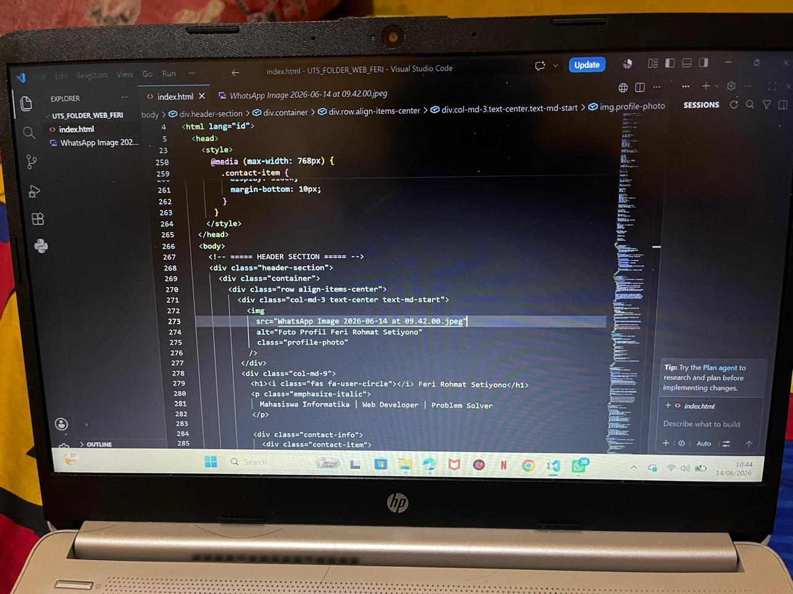
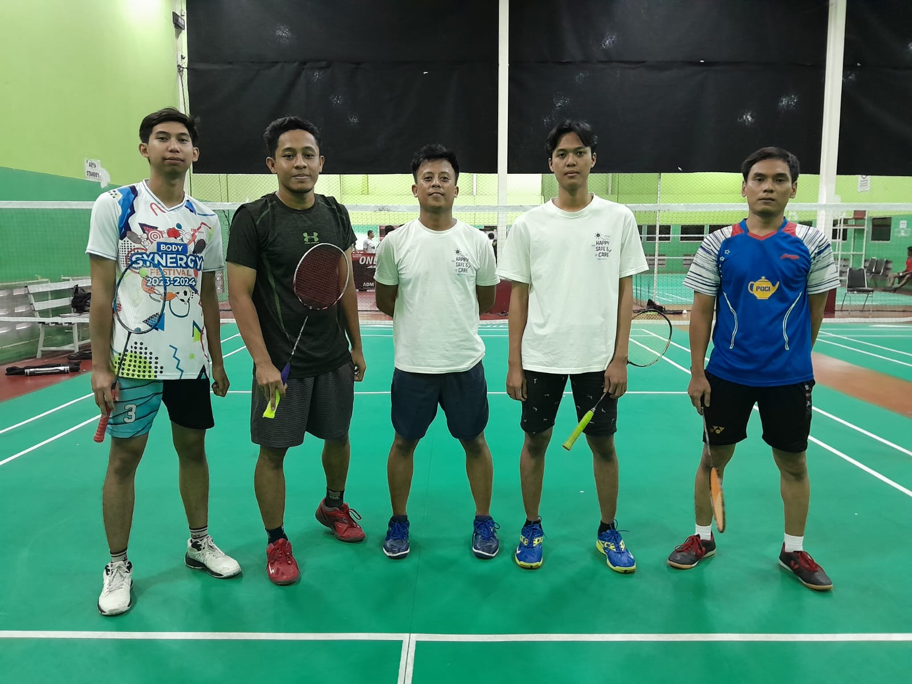
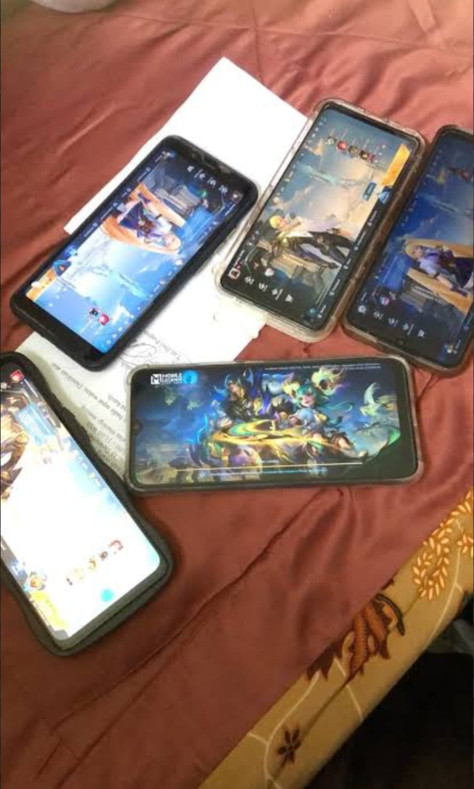

Feri Rohmat Setiyono
Mahasiswa Informatika | Web Developer | Problem Solver
Mahasiswa Informatika | Web Developer | Problem Solver
Saya adalah mahasiswa Program Studi Informatika yang memiliki minat dalam bidang teknologi informasi, pemrograman, dan pengembangan sistem komputer. Saat ini saya sedang menempuh pendidikan melalui program Pembelajaran Jarak Jauh (PJJ) Informatika. Saya memiliki semangat untuk terus belajar hal-hal baru, terutama yang berkaitan dengan teknologi dan penerapannya dalam kehidupan sehari-hari.
Selain aktif dalam perkuliahan, saya juga memiliki pengalaman bekerja di lingkungan manufaktur sehingga terbiasa dengan proses produksi, pemecahan masalah, dan kerja sama tim. Saya berusaha untuk selalu mengembangkan kemampuan teknis maupun kemampuan komunikasi agar dapat menjadi pribadi yang lebih kompeten dan profesional di masa depan.
Menjadi seorang profesional di bidang teknologi informasi yang mampu memberikan solusi melalui pemanfaatan teknologi secara efektif dan inovatif.
| Jenjang | Tahun | Nama Sekolah/Universitas |
|---|---|---|
| Sekolah Dasar | 2015 | SD N Sumberejo |
| Sekolah Menengah Pertama | 2018 | SMPN 1 Pamotan |
| Sekolah Menengah Kejuruan | 2021 | SMKN 1 Sedan |
| Universitas (Masih Aktif) | 2026-Sekarang | Program Studi Informatika (PJJ) - Universitas Siber Asia |
Durasi: 2 Tahun
Posisi: Operator Welding
Durasi: Masih Aktif (Hingga Saat Ini)
Posisi: Operator Injection

Teknologi Komputer

Bulu Tangkis

Gaming
Terhubung dengan saya melalui media sosial dan platform coding berikut:
| Nama Lengkap | Feri Rohmat Setiyono |
| NIM | 250401010320 |
| Tempat Lahir | Rembang |
| Tanggal Lahir | 19 Maret 2003 |
| Alamat | Sumberejo, RT002 RW001 Kec. Pamotan Kab. Rembang Jawa Tengah |
| No. Telepon | 089672326400 |
| ferisetiyono19@gmail.com |